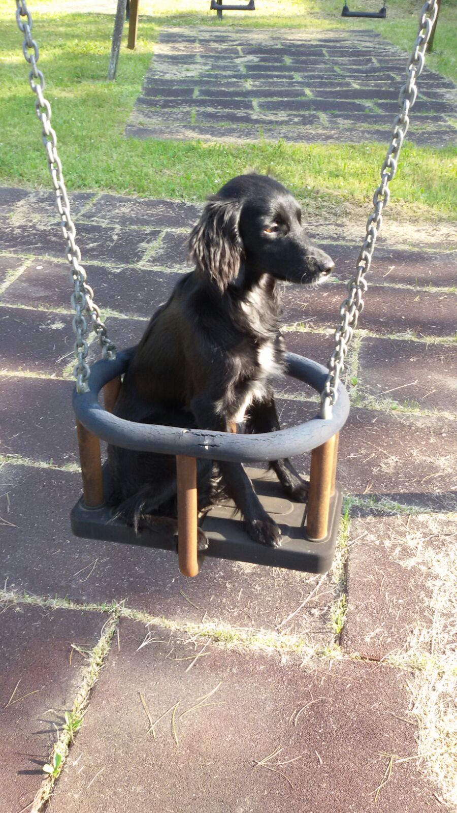
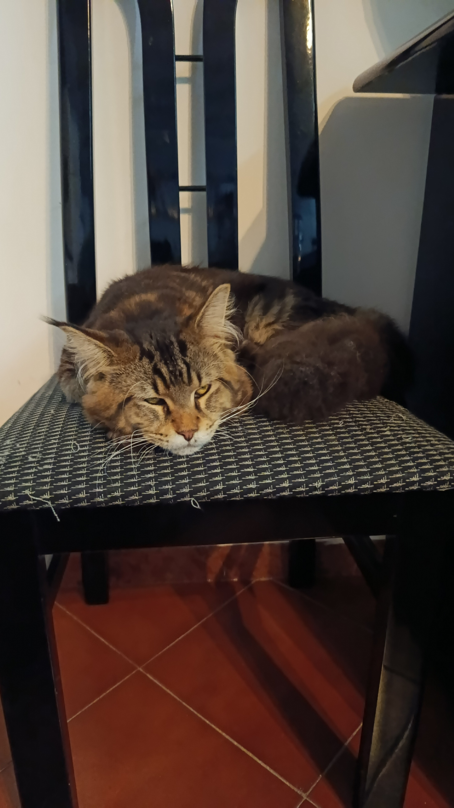

Lei è la regina di casa, CARROT CAKE, una gatta coraggiosa che tutti i giorni ci protegge dai pericoli della giungla in cui viviamo, o almeno questo accade nella sua testa. È una gatta dolcissima e dei graffi che abbiamo sulla mani lei non ne sa niente.
La Casa
Siamo sempre state amanti dei nostri piccoli amici a quattro zampe, cani o gatto che siano, questa casa ha sempre avuto amici pelosetti quindi andiamo a conoscere i nostri fantastici 4, che ci tengono compagnia da anni!
La Principessa, ATHENA, fifona come poche ha paura della sua stessa ombra, ama le coccole forse anche troppo alle volte, è sempre stata trattata come la sua carica esige.
Il nostro supereroe, Yagho, con il suoi piccoli grandi abbai yaghetto ci difenda da ogni male che osa avvicanarsi alla casa, anche alla malvagie crocchette che si azzardano a non stare nella sua bocca mentre gli viene riempita la ciotola.
Ultimo ma non per importanza, il Dottor Emmett Brown, è esattamente un riferimento a quel film, che fun fact è il film preferito di Gabri, che ha dato anche il nome all'allevamento. È impossibile non innamorarsi del dottore, più che possibile che lui non ami voi, invece, infatti per lui esiste solo la sua mamma tutto il resto è niente. Dolcezza, impertinenza, iperattività e amore tutte in una grossa palla di pelo.

Infine ci siamo noi, gabri & mari, rispettivamente destra e sinistra. Due sorelle che con tanta passione si occupano di queste meraviglie della natura.